松島の海と、杉の参道
松島
松島の海は、春霞の中にぼんやりと島を浮かべていた。妻と並んで海を背に写真を撮る。それから松島のお寺をめぐった。白い砂の庭の前で、息子と妻がそろって笑った。
境内の古い屋根は、反りが美しかった。杉の木はとても太く、その根元には苔がびっしりと生えていた。
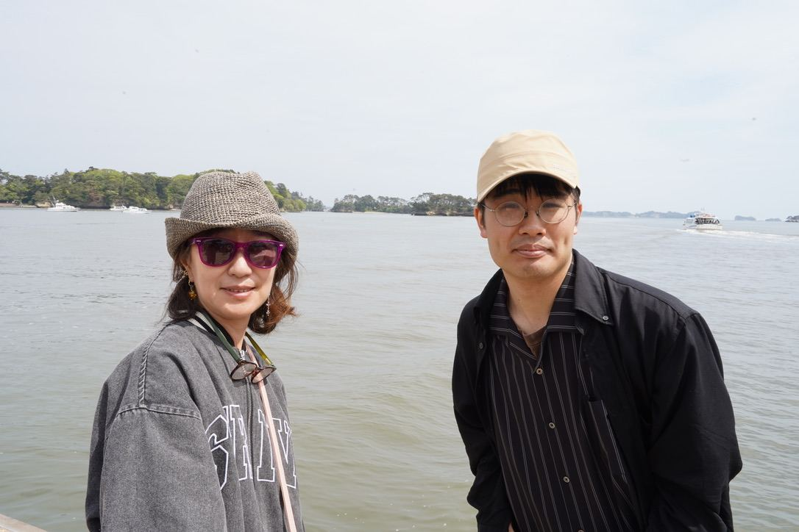
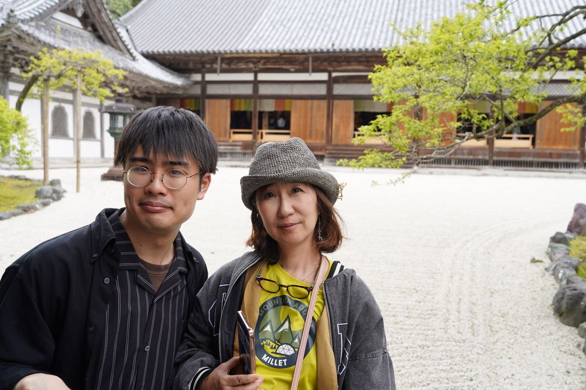
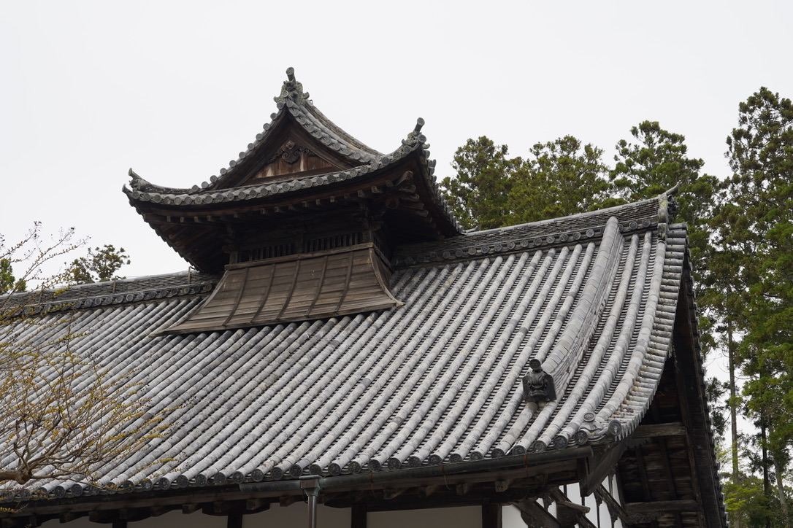
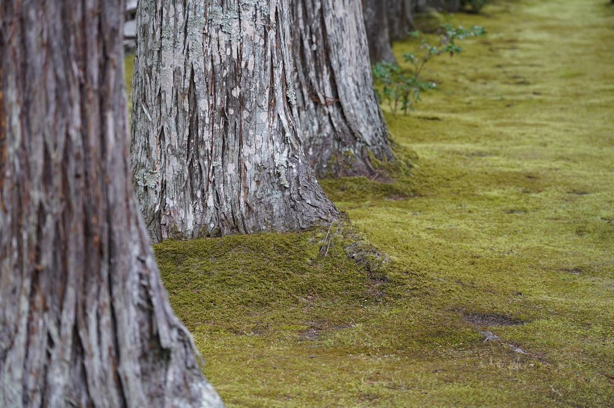
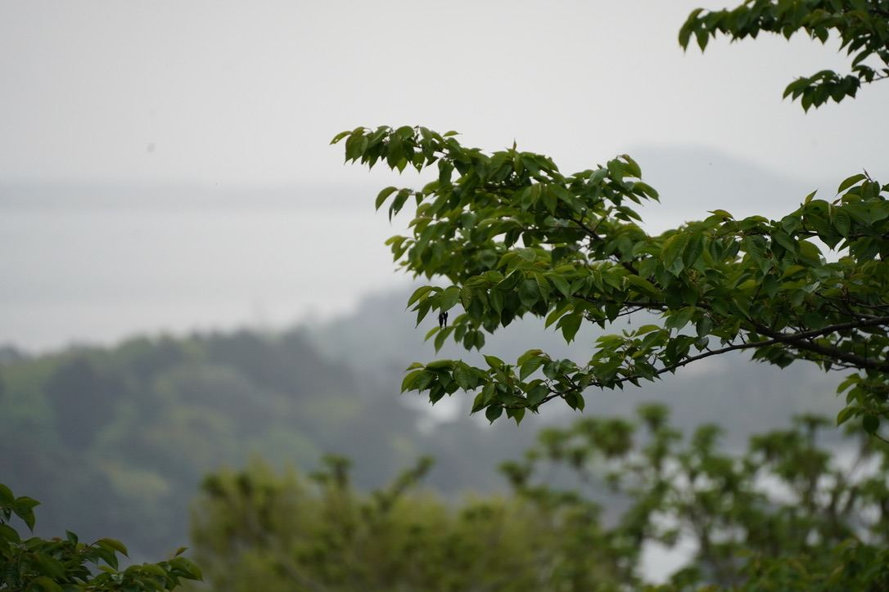
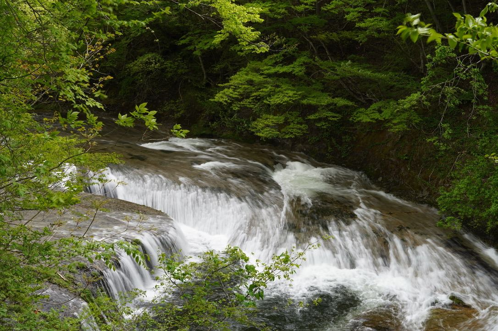
松島・秋保大滝・那須岳 2026年5月3日〜5日
2026年のゴールデンウィーク、僕らは三人で東北をめぐった。松島の海、秋保の滝、そして帰り道に那須の山。新緑の季節の東北は、どこを見ても水がきれいだった。
松島
松島の海は、春霞の中にぼんやりと島を浮かべていた。妻と並んで海を背に写真を撮る。それから松島のお寺をめぐった。白い砂の庭の前で、息子と妻がそろって笑った。
境内の古い屋根は、反りが美しかった。杉の木はとても太く、その根元には苔がびっしりと生えていた。





秋保
翌日は秋保の大滝へ行った。森の奥から、白い水が轟音をあげて落ちてくる。その下流の渓流は、苔むした岩のあいだを何段にも分かれて流れていた。
滝のそばのお不動さんでお参りをし、境内に咲くシャガの白い花と、真っ赤な牡丹を眺めた。
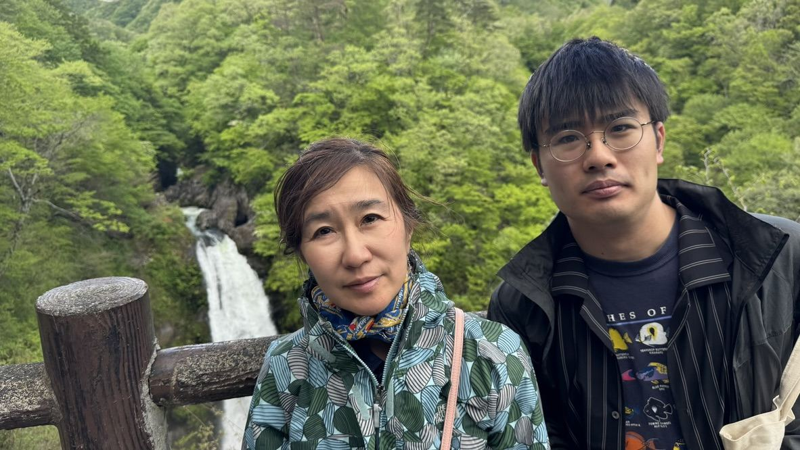
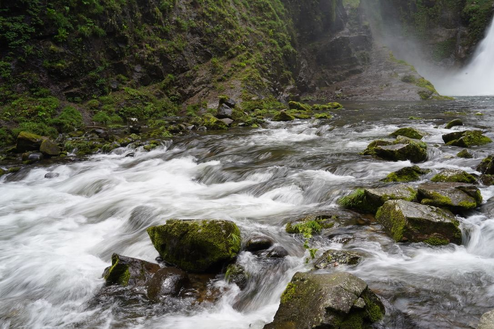
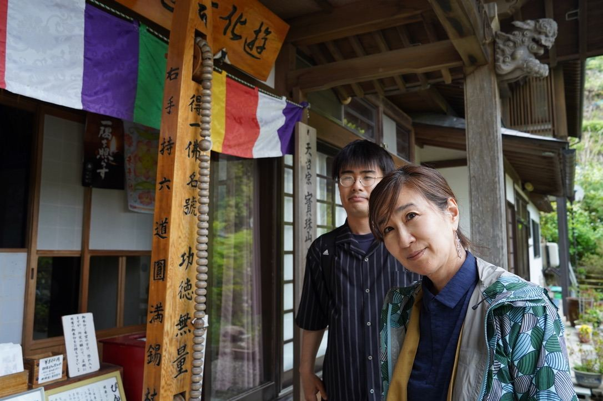
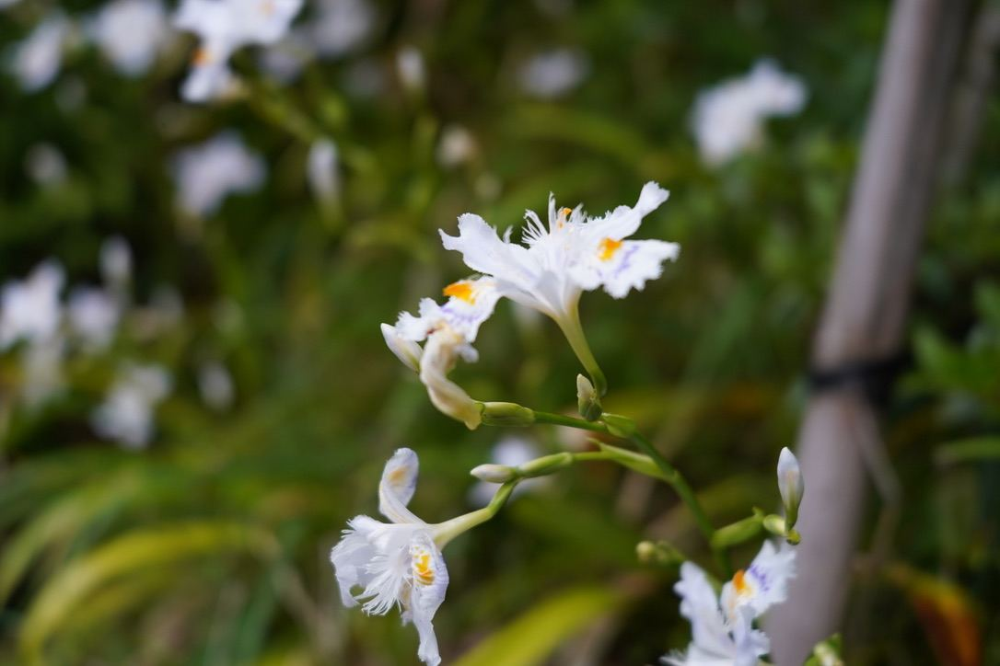
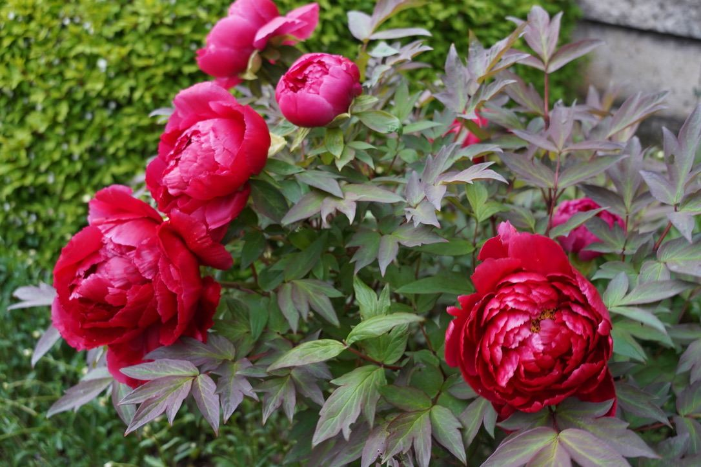
那須
こどもの日、帰り道に那須岳へのぼった。岩だらけの道を歩き、頂上の小さな鳥居のそばで、息子と並んで自撮りをした。遠くまで山並みが重なり、足もとには火山の赤茶けた斜面が広がっていた。
下山して、渓谷にかかる大きな吊り橋を渡った。妻は橋の真ん中で両手を広げた。夕方の境内では、苔むした狛犬が僕らを見送ってくれた。
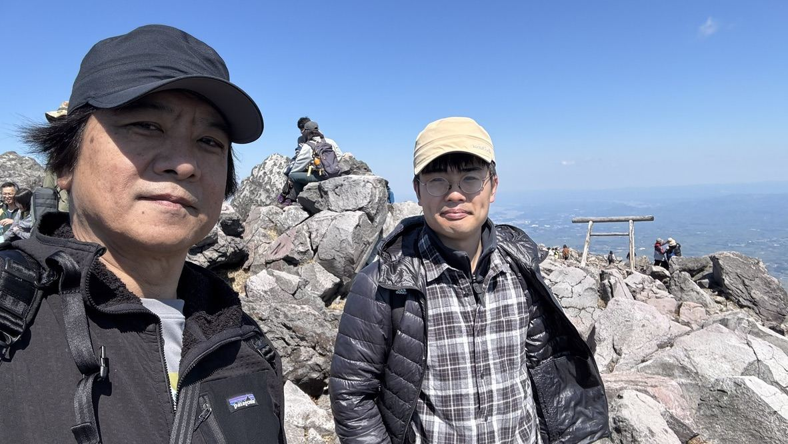
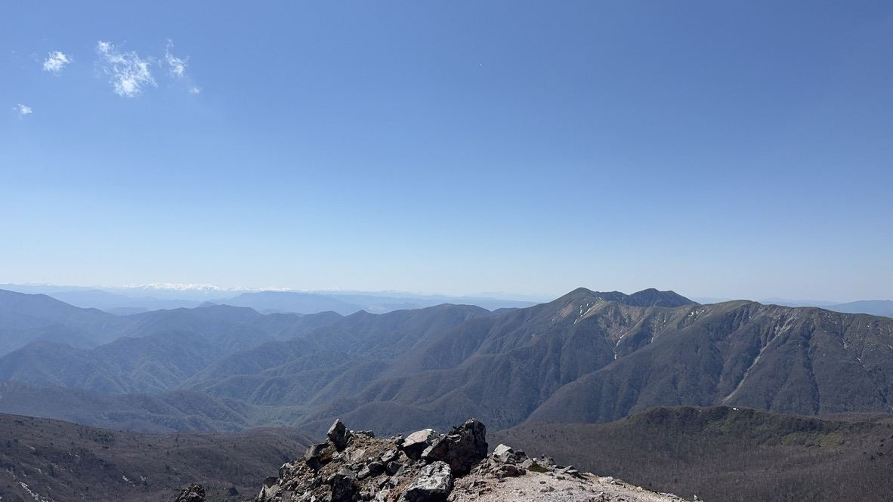
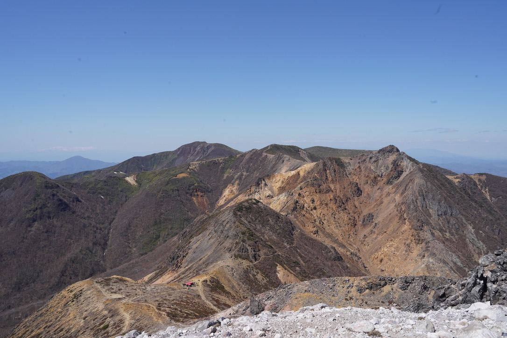
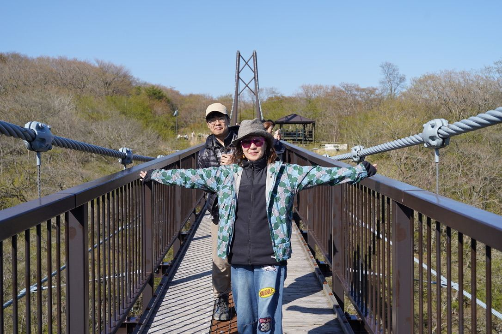
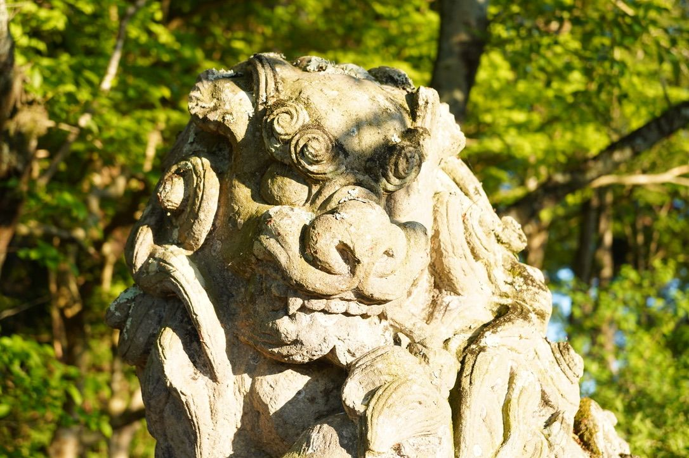